Introduction
Le but de ce projet est de s'entrainer à réaliser le cadrage d'un projet orienté IA, dans un contexte Agile.
Il ne s'agira pas de fournir un chiffrage forcément très réaliste, nous allons ici nous concentrer sur la méthodologie.
Nous nous baserons sur un projet fictif d'application mobile de recommandation de vêtements à partir de la tenue portée par l'utilisateur.
Dans ce contexte fictif, nous sommes une entreprise qui commercialise des articles vestimentaires, qui dispose déjà d'un réseau de boutiques physiques et d'un site e-commerce.
Les objectifs du projet sont les suivants :
- Identifier les objectifs du projet d'application mobile.
- Créer le backlog des users stories.
- Dimensionner le projet : équipe, coûts et gains attendus.
- Planifier le déroulé du projet.
- Maîtriser les enjeux légaux et éthiques.
- Identifier et mitiger les risques liés au projet.
Retrouvez tous les fichiers associés à ce projet sur mon GitHub
Identifier les objectifs du projet
Avant de se lancer tête baissée dans le cadrage du projet, il faut vérifier si nous sommes en mesure de répondre simplement à ce type de questions (la liste n'est pas exhaustive) :
- À quoi sert ce projet, quel est son but concret ?
- Comment la réussite du projet sera-t-elle évaluée ?
- Les livrables du projet sont-ils précisément définis ?
- Est-ce que toutes les parties prenantes ont les mêmes réponses à ces questions ?
Nous pourrions définir les objectifs suivants pour notre projet fictif :
- Augmenter les ventes.
- Recruter des clients.
- Améliorer la réputation de l'entreprise.
- Minimiser les risques du projet.
Présentation du concept fictif
Pour rappel, nous nous concentrons ici sur la méthodologie de cadrage d'un projet. Il n'est pas très important ici de savoir s'il est réaliste ou pas,
mais cette question devra bien sûr être posée dans une situation réelle !
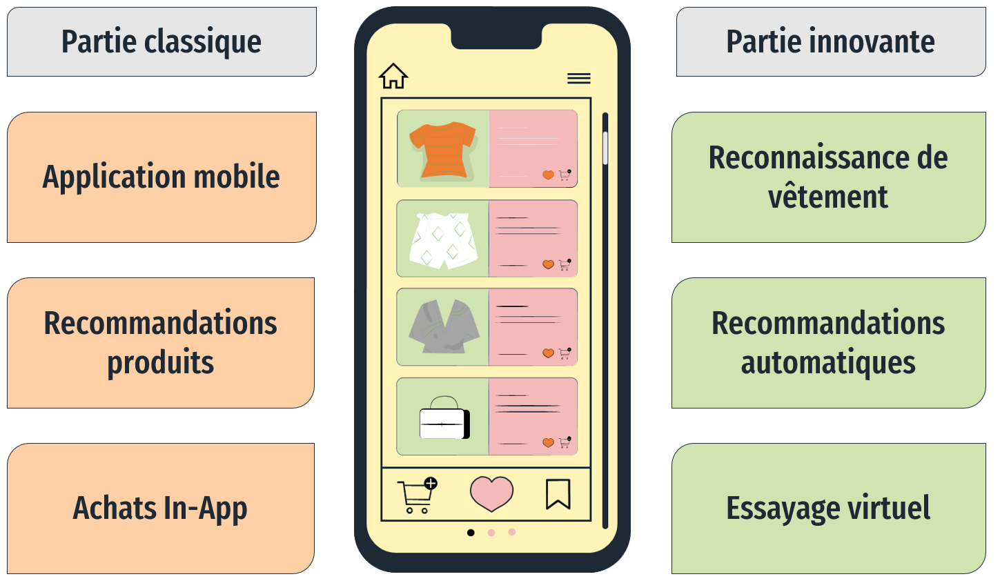
L'application aura des aspects classiques et d'autres plus innovants
Partie classique :
- Il s'agit d'une application mobile.
- Propose des recommandations de vêtements en fonction de préférences de marques/styles.
- Il est possible de faire des achats In-App.
- L'application peut identifier sur une photo les vêtements portés par l'utilisateur.
- Recommandations de vêtements en fonction des vêtements portés par l'utilisateur.
- Affichage des vêtements recommandés sur la photo de l'utilisateur : essayage virtuel.
Création du backlog
Le backlog est une liste dynamique et priorisée de toutes les fonctionnalités, exigences, améliorations et correctifs nécessaires pour compléter un projet. Il s'agit d'un artefact central utilisé dans le développement logiciel Agile pour planifier et organiser le travail à réaliser.
- Liste des éléments à réaliser : Le backlog contient tous les éléments qui sont nécessaires pour livrer le produit final. Ces éléments peuvent être des fonctionnalités, des bugs, des améliorations, des tâches de maintenance, etc.
- Priorisation : Les éléments du backlog sont classés par ordre de priorité. Cela permet à l'équipe de développement de se concentrer sur les éléments qui apportent le plus de valeur au produit.
- Dynamisme : Le backlog est un artefact dynamique qui évolue tout au long du projet. De nouveaux éléments peuvent être ajoutés, d'autres peuvent être modifiés ou supprimés en fonction des besoins du produit et des retours d'expérience.
- Estimation : Chaque élément du backlog doit être estimé en termes d'effort nécessaire pour le réaliser. Cela permet à l'équipe de planifier ses itérations ou ses sprints en fonction de sa capacité de travail.
- Transparence : Le backlog est accessible à toute l'équipe de développement ainsi qu'aux parties prenantes du projet. Cela favorise la transparence et permet à chacun de comprendre les objectifs et les priorités du projet.
- Collaboration : Le backlog est souvent collaboratif, avec la participation de différentes parties prenantes telles que les propriétaires de produit, les développeurs, les testeurs, etc. Cette collaboration permet de s'assurer que le backlog reflète bien les besoins du produit.
- Découpage en éléments gérables : Les éléments du backlog sont généralement découpés en petites tâches ou user stories qui peuvent être réalisées dans une itération ou un sprint. Cela permet une progression incrémentale du produit.
Concernant la priorisation, nous utiliserons la méthode MoSCoW, en associant chaque user story à de ces quatre niveaux de priorité :
- « Must have » : sont indispensables, sans ces fonctionnalités, pas d'application (vital).
- « Should have » : doit être fait dans la mesure du possible (essentiel).
- « Could have » : pourrait être fait dans la mesure où cela n'a pas d'impact sur les autres tâches (confort).
- « Won't have » : ne sera pas fait cette fois mais pourra être fait plus tard (luxe).
- Choisir le profil qui va produire cette user story.
- Estimer la charge, en jours de travail, dont ce profil va avoir besoin pour réaliser cette tâche.
- Multiplier cette charge en jour par le coût journalier du profil pour avoir la charge financière de la user story.
- Calculer la proportion de la charge représentée par cette user story par rapport à l'ensemble du projet.
User stories de notre projet
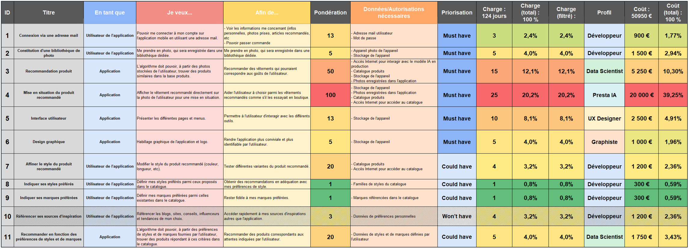

Le fichier Excel avec le backlog se trouve sur mon GitHub si le détail des users stories vous intéresse.
Nous nous concentrons ici sur la méthodologie de cadrage d'un projet, dans la réalité tous les profils intervenant sur le projet doivent participer à l'élaboration
du backlog, afin de mieux estimer les charges grâce à leur expérience métier et de n'oublier aucune user story.
Dans ce projet fictif, nous imaginons que notre profil Data Scientist est junior et qu'un prestataire externe IA est nécessaire à la réalisation de certaines tâches.
Dimensionner le projet : équipe
Nous pouvons envisager un organigramme de ce type pour notre projet :
Équipe projet
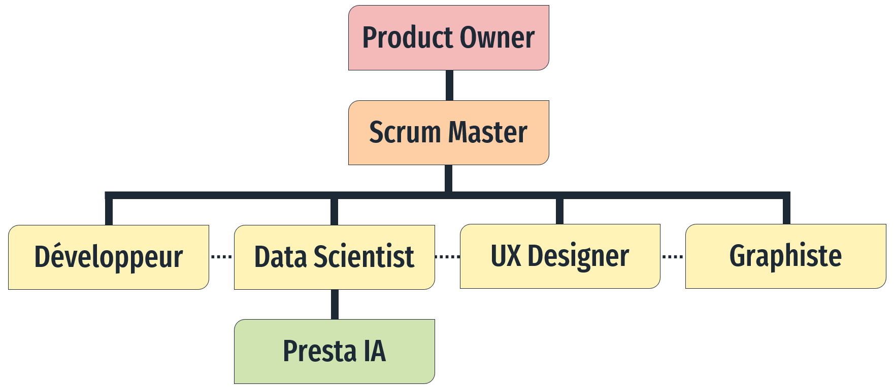
Toutes les parties prenantes doivent communiquer fréquemment, sauf éventuellement le profil externe qui sera piloté par le Data Scientist.
Charge par profil
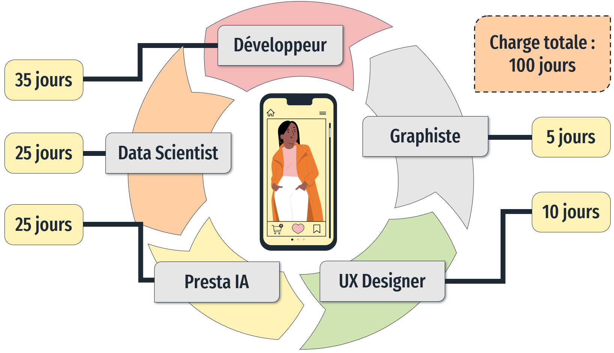
La charge totale de 100 jours ne signifie pas une durée de développement de 100 jours. Nous avons plusieurs profils
et donc certaines tâches pourront être réalisées simultanément.
Dimensionner le projet : coûts
À partir de notre backlog, nous pouvons déterminer les charges et les coûts en ce qui concerne les user stories, mais d'autres coûts seront également à considérer.
Coût des user stories
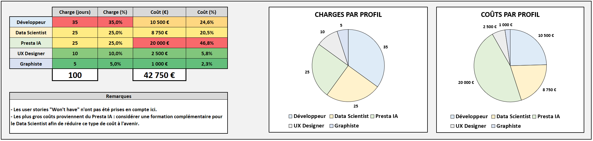
Concernant les coûts d'infrastructure, ils ont été évalués en optant pour Azure et son service Azure AI Custom Vision.
Coût de l'infrastructure
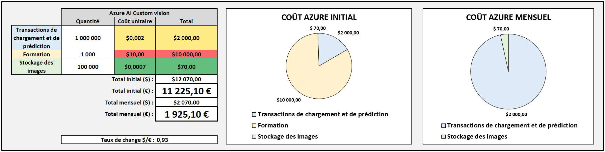
Les coûts de formation du modèle (entrainement) constituent une part importante des coûts initiaux du projet.
Il faut également considérer les coûts de maintenance. Ceux-ci sont estimé à 15 % du coût initial.
Coût de maintenance
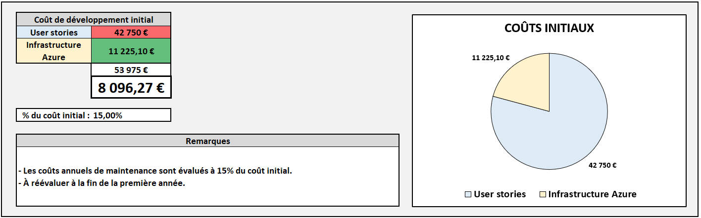
Il pourra être nécessaire de réévaluer ces coûts de maintenance une fois l'application en production.
Créer une application de qualité est important, la faire connaitre l'est tout aussi, car nous évoluons dans un marché très concurrentiel. Les coûts marketing sont donc à considérer dès le cadrage du projet.
- Campagne lancement produit (display + influenceurs) : 30 000 €
- Campagne mensuelle après lancement (display) : 3000 €
Dimensionner le projet : gains attendus
Estimons tout d'abord les gains apportés par notre projet.
Estimation des gains apportés par l'application
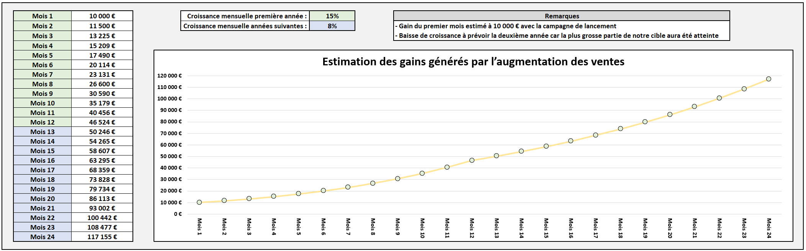
Elle devra être réévaluée régulièrement au cours de la vie du produit.
Maintenant que nous connaissons les coûts initiaux, mensuels et les gains potentiels, nous pouvons estimer la rentabilité dans notre application.
Rentabilité de l'application
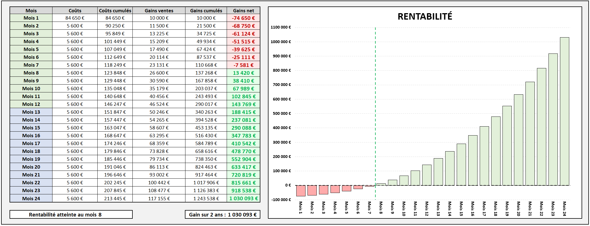
La rentabilité serait atteinte à partir du 8ème mois une fois l'application en production.
Remarque : Retrouvez le détail de ce dimensionnement dans le fichier Excel associé sur mon GitHub.
La méthode Agile Scrum
Le cadrage de ce projet fictif a été imaginé dans un contexte Agile,
dans sa variante Scrum.
Quelques-uns des grands principes de la méthode Agile :
- Respect des délais.
- Flexibilité, adaptation.
- Envois fréquents des livrables.
- Coopération, communication.
- Monitoring.
- Privilégier la simplicité.
- Un cadre un peu plus structuré.
- Présence d'un Product Owner.
- Présence d'un Scrum Master.
- Le product backlog, que nous avons créé précédemment.
- Les sprints, durant lesquels un certain nombre de user stories seront traitées.
- Des points réguliers afin de s'assurer du bon déroulement du processus.
- Un point planification : les user stories à traiter lors du sprint à venir sont choisies.
- Sprint : les user stories sont traitées par les profils mobilisés sur ce sprint.
- Daily stand-up : un point de 15 min, tous les jours durant le sprint, debout pour éviter les réunions qui s'éternisent, pour vérifier le bon déroulement du processus et identifier d'éventuels problèmes.
- Point pilotage et replanification : uniquement si le besoin a été identifié lors d'un daily stand-up, pas de réunion inutile.
- Point revue : à la fin du sprint, les user stories sont passées en revue pour vérifier qu'elles ont bien toutes été traitées.
- Point rétrospective : à la suite du point revue, une rétrospective du sprint est faite pour faire le bilan des problèmes rencontrés et des optimisations à mettre en place pour les prochains sprints.
Un cycle Scrum
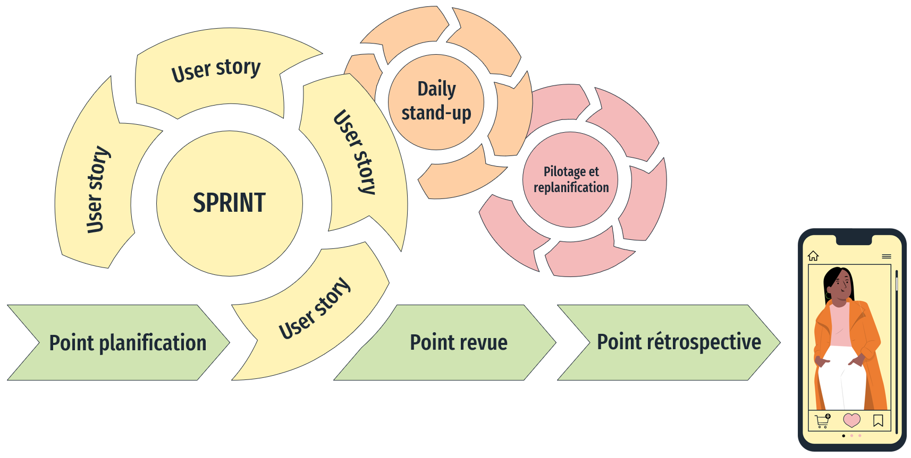
Éviter le piège de la réunionite : ce cadre de travail comprend de nombreux points qui sont très importants pour le bon déroulé du processus. Attention cependant à ne pas tomber dans une dérive qui serait néfaste : chaque point ne doit avoir lieu que s'il est utile, ne faire intervenir que les personnes réellement impliquées, être de courte durée, être bien cadré avec des objectifs clairs.
Planning de développement
Grâce à notre backlog, nous allons pouvoir planifier nos sprints. Pour ce projet, j'en ai imaginé trois. Ils ont tous le même déroulé comme expliqué précédemment, mais les profils impliqués, le nombre de user stories à traiter et donc la durée de chaque sprint peut varier.
Sprints planifiés
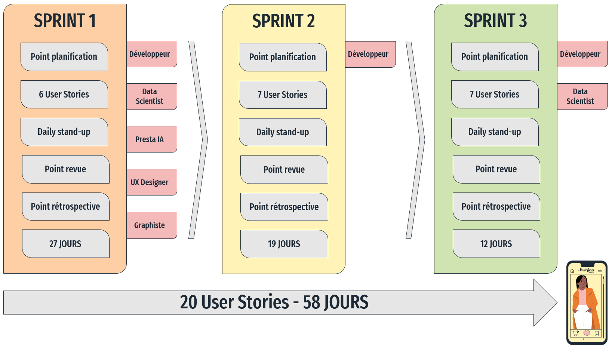
En rouge : les différents profils mobilisés sur les sprints.
Burndown chart
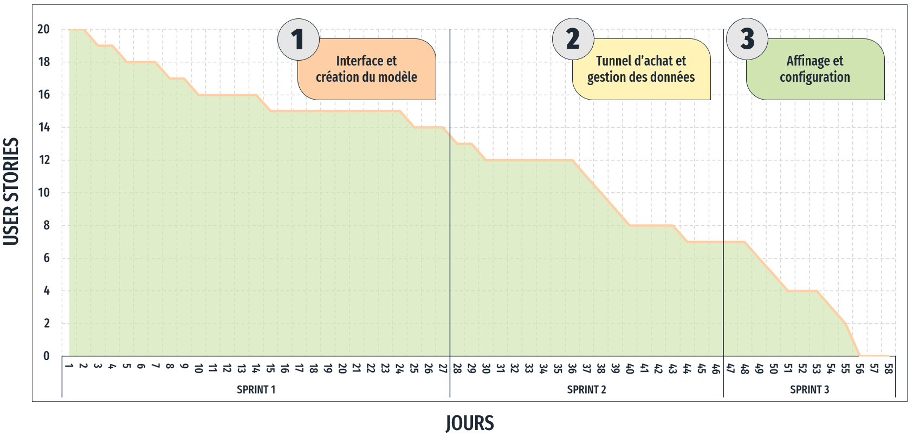
Le burndown chart nous permet d'avoir une meilleure vision de l'avancée du projet dans le temps.
Enjeux légaux
Les utilisateurs vont indiquer des préférences, se prendre en photo, il va donc y avoir des données personnelles impliquées dans notre projet.
Les principes du RGPD devront donc être respectés :
- Collecter uniquement les données nécessaires à nos traitements.
- Être transparent vis-à-vis de l'utilisateur concernant les données collectées.
- Garantir un droit d'accès de l'utilisateur aux données le concernant.
- Fixer des durées de conservation pour toutes les données personnelles.
- Sécuriser le stockage des données personnelles.
- Localiser le stockage et le traitement de ces données sur le territoire Européen.
- Tous les principes précédents doivent s'inscrire dans la durée, tout au long de la vie du produit.
Tout traitement concernant des données personnelles doit être déclaré à la CNIL.
J'en ai identifié quatre pour ce projet :
- Analyse de la photo de l'utilisateur pour produire des recommandations.
- Analyse de la photo de l'utilisateur pour l'essayage virtuel des vêtements.
- Recommandations en fonction des préférences des utilisateurs.
- Affinage des recommandations en fonction des évaluations données par l'utilisateur aux précédentes recommandations.
Enjeux éthiques
Nous allons fournir en entrée de notre modèle des photos des utilisateurs ainsi que des données de préférences. Le modèle produira à partir de ces données des prédictions (recommandations de vêtements). Nous devons identifier de potentiels biais du modèle, car ces derniers pourraient heurter la sensibilité des utilisateurs, déclencher des polémiques et plus globalement fournir des recommandations de mauvaise qualité qui déboucheront sur un moins bon taux de conversion.
- Le modèle fait-il toujours le même type de recommandation pour un type morphologique donné ?
- Même interrogation concernant le genre exprimé ?
- Ou encore en fonction de l'ethnie de l'utilisateur ?
Identifier et mitiger les risques
Tout projet comporte des risques, qu'il faudra identifier et hiérarchiser selon leur criticité. Pour déterminer la criticité d'un risque,
nous multiplions son impact potentiel (noté de 1 à 3) par la probabilité que ce risque se réalise (noté de 1 à 3).
Les risques les plus critiques doivent être traités en priorité, mais à terme il est bien sûr nécessaire que l'ensemble des risques soient traités.
Pour chaque risque il faut déterminer :
- Son impact, ses conséquences.
- Les actions de prévention à mettre en place pour réduire la probabilité de réalisation du risque.
- Les actions de correction à déclencher en cas de réalisation du risque.
Risques identifiés
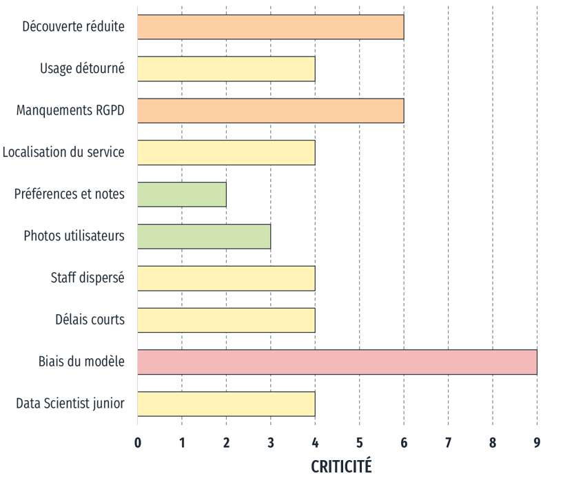
Les risques n'ont pas tous la même criticité.
Profil de risque du projet
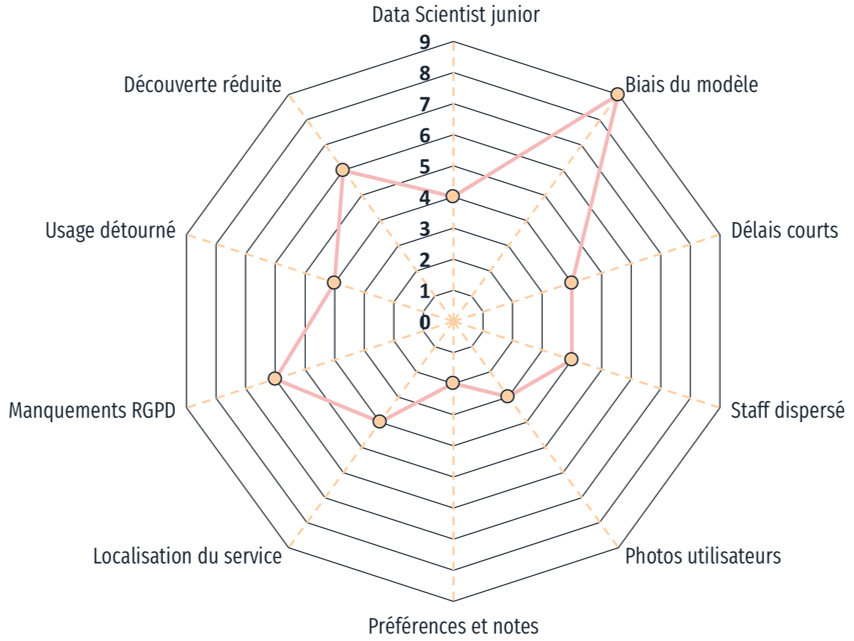
Certains risques découlent du contexte que nous avons imaginé pour notre projet fictif.
Détaillons les trois risques les plus critiques pour ce projet.
Biais du modèle :
Nous l'avons évoqué dans la partie précédente sur les enjeux éthiques, ce risque est pour moi le plus critique. Ses conséquences sont importantes :
- Bad buzz, polémiques.
- Baisse de la réputation de l'entreprise.
- Attrition (perte de clients).
- Baisse du chiffre d'affaires.
- Coûts supplémentaires nécessaires à la mise en place des correctifs.
- S'assurer de la bonne qualité et diversité des données d'entrainement pour notre modèle.
- Effectuer des tests rigoureux pendant et après l'entrainement du modèle.
- Éventuellement lancer un bêta-test fermé de l'application avant la mise à disposition au grand public.
- Établir un contrat de maintenance avec le prestataire IA afin de garantir des délais courts pour la mise en place des correctifs.
- Préparer un plan de communication en cas d'identification publique d'un biais, afin de rapidement éteindre tout début de polémique.
Ce risque n'est pas à négliger, les conséquences peuvent être très lourdes :
- Condamnations, amendes.
- Baisse de la réputation de l'entreprise.
- Interruption du service imposé par les autorités en attendant la mise en place des correctifs.
- Baisse du chiffre d'affaires.
- Coûts supplémentaires nécessaires à la mise en place des correctifs.
- Faire valider tous les points sensibles par le DPO.
- Le DPO doit être impliqué durant toute la durée de vie du produit, car ce dernier peut évoluer, ainsi que les réglementations en vigueur.
Notre application va proposer des recommandations en fonction des préférences de l'utilisateur, ainsi que sa façon actuelle de s'habiller. Si l'utilisateur a déjà ses placards remplis de produits similaires, pourquoi passerait-il commande ? Si les produits recommandés sont trop éloignés des goûts de l'utilisateur, il ne les achètera pas non plus. Cette notion de découverte peut sembler secondaire, mais si elle est mal dosée, c'est l'échec garanti de l'application :
- Faible taux de conversion.
- Chiffre d'affaires en dessous des prévisions.
- Rentabilité plus longue à s'établir.
- Perte d'intérêt de l'utilisateur, attrition.
- Coûts supplémentaires nécessaires à la mise en place des correctifs.
- Bien doser la notion de découverte lors de l'élaboration et des tests du modèle.
- Intégrer régulièrement les nouveautés du catalogue aux recommandations du modèle (nouvelles marques, nouveaux styles).
- Prendre en compte les retours des bêta-testeurs, puis des utilisateurs concernant les recommandations.
Axes d'amélioration
Ce projet avait pour but de pratiquer la méthodologie nécessaire au cadrage d'un projet IA, il était basé sur un scénario fictif. En situation réelle, certains axes d'amélioration sont à considérer, ils nécessiteront la consultation de différents experts métier :
- Inclure les coûts des profils du Product Owner et du Scrum Master dans le chiffrage.
- Quand bien même dans notre scénario le Data Scientist est un profil junior, il y a un déséquilibre excessif entre les apports de ce dernier et ceux du prestataire IA.
- Il manque la partie conception d'architecture dans le cadrage.
- Une partie testing devrait être chiffrée et intégrée au planning.
- Cadrer et chiffrer la manière dont seront pris en compte les retours utilisateurs pour le développement des versions ultérieures.
Conclusion
Nous avons pu atteindre les objectifs que nous nous étions fixés, à savoir :
- Identifier les objectifs du projet d'application mobile.
- Créer le backlog des users stories.
- Dimensionner le projet : équipe, coûts et gains attendus.
- Planifier le déroulé du projet.
- Maîtriser les enjeux légaux et éthiques.
- Identifier et mitiger les risques liés au projet.
Perspectives
Pour un tel projet d'application mobile, nous pourrions envisager les perspectives suivantes :
- Réaliser une étude plus étendue des risques.
- Envisager des fonctionnalités supplémentaires pour notre application.
- Création d'une version en marque blanche de notre application pour le marché B2B (pour d'autres revendeurs).
- Créer une variante de l'application pour un autre univers produits, par exemple la décoration de la maison.
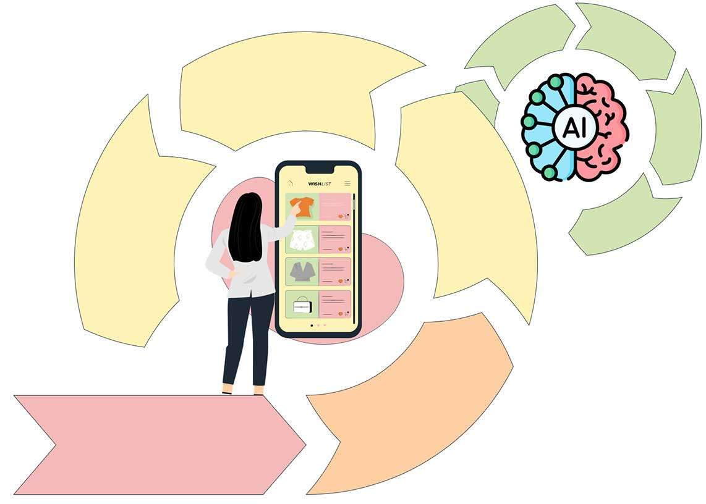